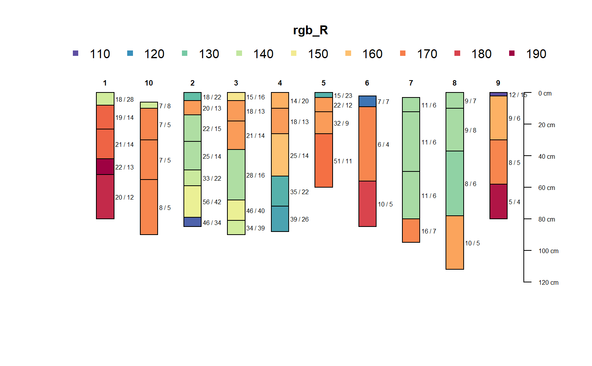
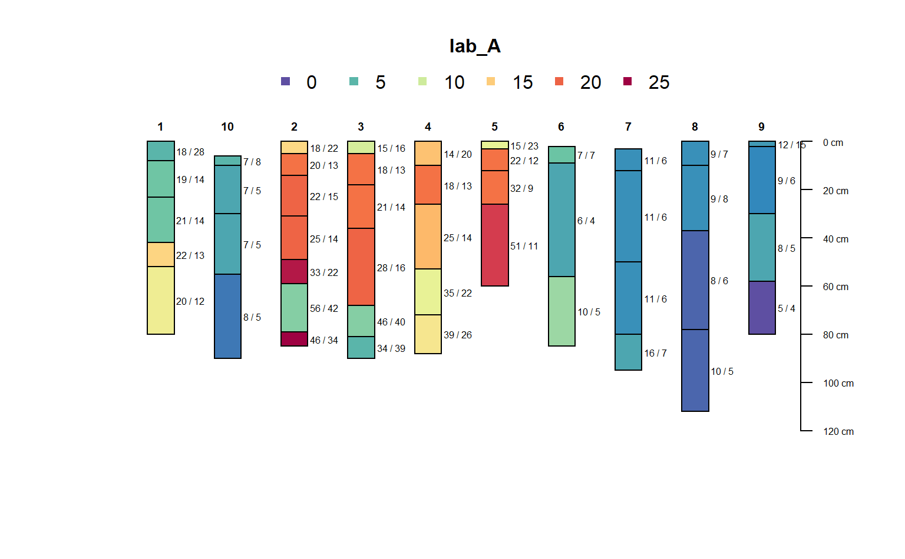
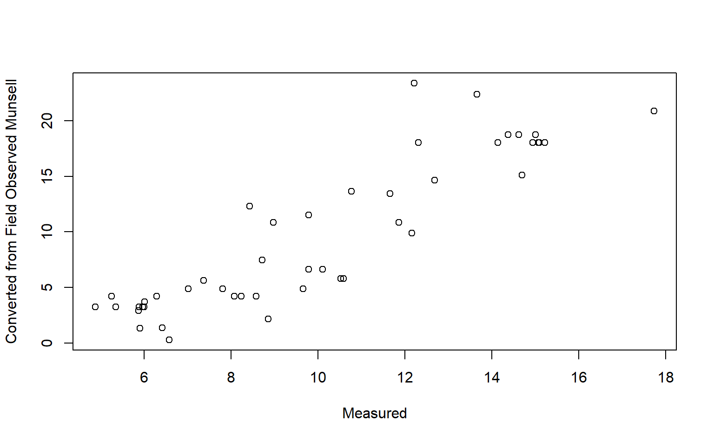

R/munsell2rgb.R
munsell2spc-SoilProfileCollection-method.RdConvert Munsell hue, value and chroma into sRGB (rgb_R, rgb_G, rgb_B) and CIELAB (lab_L, lab_A, lab_B) color coordinates using munsell2rgb. The converted values are stored in the horizons() slot unless as.spc is FALSE, in which case the results are combined with profile and horizon ID columns and returned as the data.frame subclass used by the SPC.
# S4 method for SoilProfileCollection munsell2spc( object, hue = "hue", value = "value", chroma = "chroma", .data = NULL, as.spc = TRUE )
| object | A SoilProfileCollection |
|---|---|
| hue | Column name containing numeric hue values. Default: |
| value | Column name containing numeric value values. Default: |
| chroma | Column name containing numeric chroma values. Default: |
| .data | Optional: a character vector of equal length to number of horizons (containing Munsell notation), or a column name in the horizon data OR a data.frame containing three columns (names specified in |
| as.spc | Return a data.frame-like object with ID columns? |
A SoilProfileCollection or data.frame-like object
data(sp3) depths(sp3) <- id ~ top + bottom # inspect input data horizons(sp3)[,c("hue","value","chroma")]#> hue value chroma #> 1 10YR 5 3 #> 2 10YR 6 4 #> 3 10YR 6 4 #> 4 7.5YR 6 6 #> 5 7.5YR 6 5 #> 6 10YR 5 3 #> 7 10YR 6 3 #> 8 10YR 6 3 #> 9 2.5Y 6 4 #> 10 5YR 4 4 #> 11 5YR 5 6 #> 12 5YR 4 6 #> 13 5YR 4 6 #> 14 2.5YR 4 6 #> 15 10YR 5 4 #> 16 2.5YR 3 6 #> 17 7.5YR 5 4 #> 18 5YR 5 6 #> 19 5YR 5 6 #> 20 5YR 4 6 #> 21 10YR 5 4 #> 22 10YR 5 3 #> 23 7.5YR 5 6 #> 24 5YR 5 6 #> 25 5YR 5 5 #> 26 7.5YR 4 4 #> 27 2.5YR 4 3 #> 28 7.5YR 4 4 #> 29 5YR 5 6 #> 30 5YR 5 6 #> 31 5YR 5 7 #> 32 10YR 4 3 #> 33 10YR 6 3 #> 34 10YR 6 5 #> 35 10YR 5 2 #> 36 10YR 5 2 #> 37 10YR 5 2 #> 38 10YR 6 3 #> 39 10YR 5 2 #> 40 10YR 5 2 #> 41 2.5Y 5 2 #> 42 2.5Y 6 3 #> 43 10YR 4 2 #> 44 10YR 6 2 #> 45 10YR 6 3 #> 46 2.5Y 7 2# do color conversions to sRGB and LAB, join into horizon data sp3 <- munsell2spc(sp3) # plot rgb "R" coordinate by horizon plot(sp3, color = "rgb_R")# note that `lab_A` values do not exactly match the original `A` values # this is because `lab_A` was computed from the (field determined) Munsell color notation, # while `A` was directly measured in the lab by colorimeter plot(sp3$A, sp3$lab_A, xlab = 'Measured', ylab = 'Converted from Field Observed Munsell')